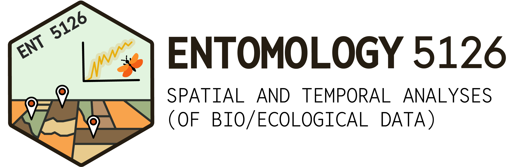

Week 3
Hypotheses and t-tests
What we’ll cover this week
Structuring statistics around our research questions
Hypothesis formulation
One-sample t tests
Paired, two-sample t tests
Hypothesis formulation
The tail (pun intended) of two hypotheses
Let’s start by formulating some basic hypotheses around a simple research question. To do that, we will frame out two competing hypotheses:
First, write the null hypothesis, \(H_0\). This reflects the claim believed to be true, that a system is governed by simple, random variation in the universe.
Next, specify the alternative hypothesis, \(H_A\). This reflects a departure from \(H_0\) that we are designing and experiment or study to be able to detect: that the results of our sampling reflect some factor or influence other than random variation.
How many tails do we use?
In previous stats courses, you likely covered one- and two-tailed statistical tests, which ultimately stem from the structure of our hypotheses.
In practice, we almost always will be using two-tailed tests, unless we have very specific reasons to suspect a directional hypothesis.
Make your intentions clear!
Before conducting any tests (or even looking at your data), decide on whether you will be using a one- vs. two-tailed test of \(H_A\).
Hypothesis formulation example: one-tailed
Research question: Are maple trees taller than oak trees?
\(H_0\): There is no difference between the heights of oak and maple trees
\[\mu_{oak} = \mu_{maple}\]
\(H_A\): Oak trees are taller than maple trees
\[\mu_{oak} > \mu_{maple}\]
Hypothesis formulation example: two-tailed
In practice, we would want to formulate our hypothesis more conservatively – allowing for any potential differences between our sampled populations:
\(H_0\): There is no difference between the heights of oak and maple trees
\[\mu_{oak} = \mu_{maple}\]
\(H_A\): There is a difference in height between oak and maple trees
\[\mu_{oak} ≠ \mu_{maple}\]
Hypothesis formulation example: two-tailed
Research question: We want to know whether patients experience a reduction in coughing when given cough medication
\(H_0\): There is no difference in number of coughs per hour with or without
\[\mu_{medicated} = \mu_{unmedicated}\]
\(H_A\): There is a difference coughs per hour when taking
\[\mu_{medicated} ≠ \mu_{unmedicated}\]
Pair up and formulate!
Research question: We want to know whether a particular species of trout prefers riffles or pools (two habitat types) within a stream

One-sample t tests
Significance tests: an overview
When we go out and perform an experiment and collect data, our sample data are outcomes of a data generating process
The data generating process may be described by a probability distribution with certain parameters
We begin by considering a random sampole \(Y_1, Y_2, Y_3,...Y_n\) of size \(n\) from a normal distribution \(N(\mu, \sigma^2)\) with unknown \(\mu\) and known \(\sigma^2\).
We then use statistics from the sample data to draw inference about the parameters of the probability distribution (e.g., whether the mean is different than our hypothesized value)
Significance tests: an overview
For example, use the sample mean \(\bar{Y}\) to draw inference about the population mean \(\mu\).
There are several ways of pursuing statistical inference. One of them is called significance testing.
The main idea of significance tests is to make a yes/no decision about some aspect of a population, based on a single sample.
Significance tests: the recipe needed
- Aspect of a population that is of interest (motivated by research question)
- Null hypothesis \(H_0\)
- Alternative hypothesis \(H_A\)
- Test statistic and null distribution
- Measure evidence against \(H_0\)
- Make a decision and interpret in the context of the problem or question
Test statistic distribtiions
- \(Z\): standard normal distribution - no parameters, mean/variance fixed
- \(t\): one parameter, two-tailed distribution
- \(F\): two-parameter, one-tailed distribution
- \(\chi^2\): one-parameter, one-tailed distribution
Significance tests for a known \(\sigma\)
In your previous courses/stats work, you probably started with calculating a \(Z\) statistic using the formula:
\[Z = \frac{\bar{Y} - \mu}{\sigma / \sqrt{n}}\]
This value was then compared to a \(Z\) distribution where you could obtain a p-value.
In ecology (and really, every field), we never know the population variance \(\sigma^2\), so we cannot use a \(Z\) statistic.
Instead, we estimate \(\sigma^2\) using the sample variance \(S^2\) and calculate a \(t\) statistic instead!
\(t\), \(Z\), what’s the difference!?
Like a \(Z\) distribution, a \(t\) distribution is defined by a symmetric, bell-shaped curve symmetric about 0
But, the \(t\) distribution has heavier tails than the \(Z\) does
\(t\), \(Z\), what’s the difference!?

\(t\), \(Z\), what’s the difference!?
Like a \(Z\) distribution, a \(t\) distribution is defined by a symmetric, bell-shaped curve symmetric about 0
But, the \(t\) distribution has heavier tails than the \(Z\) does
The shape of the curve depends on the sample size, \(n\). The larger the \(n\), the thinner the tails/lesser the spread. In fact, \(t_\infty = Z\)
This shape takes into consideration the degrees of freedom of our sample, effectively penalyzing for our uncertainty of the population variance.
\(t\) significance testing with unknown \(\sigma\)
Consider a random sample \(Y_1, Y_2, Y_3,...Y_n\) of size \(n\) from a normal distribution \(N(\mu, \sigma^2)\) with unknown \(\mu\) and unknown \(\sigma^2\).
Suppose our signifiance test of interest is:
\[H_0 : \mu = \mu_0\]
We can calculate our test statistic as:
\[T = \frac{\bar{Y} - \mu_0}{S / \sqrt{n}}\]
where \(T_{n-1}\) is a \(T\) distribution with \(n-1\) degrees of freedom.
\(t\) significance testing with unknown \(\sigma\)
Wheat yield example
Six, 1-acre plots are sown with a new variety of wheat. The yields for each plot (in cwt/acre) are: 25, 21, 24, 20, 26, 22 and are from \(N(\mu, \sigma^2)\).
Is there evidence that the population mean yield for this variety of wheat differs from the historical average yield (20 cwt/acre) of the old variety of wheat you were using?
\(t\) significance testing with unknown \(\sigma\)
Wheat yield example
Let \(\mu\) = population mean yield of this variety of wheat
\(H_0 : \mu = 20\)
\(H_A : \mu ≠ 20\)
Under \(H_0\), the test statistic is:
\[T = \frac{\bar{Y} - \mu_0}{S / \sqrt{n}} \sim T_{n-1}\]
\(t\) significance testing with unknown \(\sigma\)
Wheat yield example
Let’s gather and list out our values of interest.
\(n = 6, \bar{y} = 23, s = 2.37\)
Our observed test statistic is then:
\[T = \frac{\bar{Y} - \mu_0}{S / \sqrt{n}} = \frac{23 - 20}{2.37 / \sqrt{6}} = 3.10\]
on \(df = n - 1 = 5\)
Using our \(t\) table or some statistics software, we can calculate that:
\[P(T_5 ≥ 3.10) \approx 0.0138 \times 2 = \textbf{0.0276}\]
\(t\) significance testing with unknown \(\sigma\)
Wheat yield example
We can then use this p-value and compare it against a critical threshold of, for example, \(\alpha = 0.05\). If our p-value is < 0.05, we can then…
Reject \(H_0\) at the \(\alpha = 0.05\) level
or…
“The mean yield of our new wheat variety is significantly different than the historical mean yield.”
Interpreting p-values
The p-value can be interpreted as the evidence that we have against \(H_0\). The p-value is the probability that we would observe a value equal to or more extreme than our sample mean if the null hypothesis were true.
At our value of 0.0276, we would be unlikely to find a mean sample yield of 23 if our null hypothesis of \(\mu_0 = 20\) were true.
P-values are nothing more than a guide to making a decision. It allows us to make conclusions about our statistical hypothesis of whether there are patterns in our data, but not whether those patterns are driven by our scientific hypothesis
It’s up to us to draw conclusions about the validity of our scientific hypothesis based on the statistical patterns in the data. The strength of this inference depends on many factors.
A general guide to interpreting p-values
You’ll often read papers and see language describing the strength of statistical support. Assuming a critical threshold of \(\alpha = 0.05\), then we can intrepret a p-value:
≥ 0.10 as no evidence against \(H_0\)
between 0.05 and 0.10 as weak evidence against \(H_0\)
between 0.01 and 0.05 as moderate evidence against \(H_0\)
between 0.001 and 0.01 as strong evidence against \(H_0\)
smaller than 0.001 as very strong evidence against \(H_0\)
Assumptions for t-tests
- Data are independent
- \(Y_1....Y_n\) form a random sample of size \(n\) from \(N(\mu, \sigma^2)\)
- \(\sigma^2\) is unknown (i.e., no assumption about population variance)
- Any sample size \(n\) (i.e., no assumption about sample size)
Assumptions are not equal!
T-tests are relatively robust to data that are not normally distributed. However, tests are very sensitive to dependence among samples. Our data must be independent!
Paired, two-sample \(t\) test
Comparing two samples
Two-sample comparisons are far more common in ecology and biology than one-sample studies. Some examples include:
Compare milk yields of cows on two different diets
Compare timber volumes of two species of tree in a forest
Compare heart rates of patients before and after a drug treatment
Compare blood flow in two different arteries of dogs
Paired or unpaired?
There are two types of two-sample experiments: paired vs. unpaired two-sample designs
In an independent, two-sample design, there are two treatments (e.g., treatment and placebo), but there is no direct relationship between an observation on trt A and an observation on trt B
In an paired two-sample design, there are two treatments (e.g., treatment and control) and each observation of treatment A is paired with an observation of treatment B. Related or the same experimental units are used for both treatments (i.e., on the same person, animal, etc.)
Design of experimental is critical!
Choice of paired versus independent two-sample experiment is an important experimental design issue that must be considered!
Choice of analyses is critical!
In addition, it’s critical that we always analyze an experiment consistent with the manner in which it was designed.
Paired or unpaired? An example
Let’s imagine comparing the heart rates of 10 patients before and after a drug treatment. Which design would you prefer?
Heart rates of 10 patients before and after a drug treatment (same experimental units)
Heart rates of 10 patients before drug treatment and heart rates of another 10 patients after the drug treatment
We would chose the first design to remove the effect of variability among individuals and increase our precision in estimating the treatment differences (i.e., effect of the medication)
Paired samples
When two samples are paired, you will find that the pairing generally falls into one of two types:
Matched sample: two groups are matched on a particular variable (e.g., twins, spouses)
Repeated measures: a measurement on the same experimental unit before and after
Paired or unpaired?
How would you design experiments around the following research questions? Paired, or unpaired?
How does timber volume vary between two species of tree?
How does the blood flow of two different arteries compare in dogs?
How does the milk yield of cows vary on two different diets?
Paired two-sample t-test
Blood pressure example
A new drug is thought to reduce blood pressure. It is called haemowussilin. An experiment is conducted on 15 middle-aged, male hypertension patients to evaluate the effect of the drug. For each patient, blood pressure is measured, and then after 6 months of the drug treatment, blood pressure is measured again. The question of interest is whether there is any evidence that haemowussilin has an effect on blood pressure.
+ +
Paired two-sample t-test
Blood pressure example: the data
| Subject | Before (\(Y_1\)) | After (\(Y_2\)) |
|---|---|---|
| 1 | 90 | 88 |
| 2 | 100 | 92 |
| 3 | 92 | 82 |
| 4 | 96 | 90 |
| 5 | 96 | 78 |
| 6 | 96 | 86 |
| 7 | 92 | 88 |
| 8 | 98 | 72 |
| 9 | 102 | 84 |
| 10 | 94 | 102 |
| 11 | 94 | 94 |
| 12 | 102 | 70 |
| 13 | 94 | 94 |
| 14 | 88 | 92 |
| 15 | 104 | 94 |
Paired two-sample t-test
Blood pressure example: the method
Recall the general formula of a t-test:
\[T = \frac{\bar{Y} - \mu_0}{S / \sqrt{n}} \sim T_{n-1}\]
How do we get this to fit the experiment? We calculate the difference
Paired two-sample t-test
Blood pressure example: the data
| Subject | Before (\(Y_1\)) | After (\(Y_2\)) | Difference (\(D = Y_1 - Y_2\)) |
|---|---|---|---|
| 1 | 90 | 88 | 2 |
| 2 | 100 | 92 | 8 |
| 3 | 92 | 82 | 10 |
| 4 | 96 | 90 | 6 |
| 5 | 96 | 78 | 18 |
| 6 | 96 | 86 | 10 |
| 7 | 92 | 88 | 4 |
| 8 | 98 | 72 | 26 |
| 9 | 102 | 84 | 18 |
| 10 | 94 | 102 | -8 |
| 11 | 94 | 94 | 0 |
| 12 | 102 | 70 | 32 |
| 13 | 94 | 94 | 0 |
| 14 | 88 | 92 | -4 |
| 15 | 104 | 94 | 10 |
Paired two-sample t-test
Blood pressure example: the math
Let \(\mu_1 =\) the population mean blood pressure before the drug treatment and \(\mu_2 =\) the population mean blood pressure after the drug treatment.
Let \(\mu_D = \mu_1 - \mu_2\) denote the difference between the two blood pressure levels.
We want to test \(\mu_1 = \mu_2\) or \(\mu_1 ≠ \mu_2\). Equivalently, we can test:
\[H_0: \mu_D = 0\:\:\ vs \:\:\ H_A: \mu_D ≠ 0\]
Let \(D = Y_1 - Y_2\) denote the blood pressure difference and assume a random sample \(D_1, D_2...,D_15\) of sample size \(n = 15\) from \(N(\mu_D, \sigma_D^2)\)
Using this framework, we can use a one-sample t-test.
Paired two-sample t-test
Blood pressure example: the math
Under \(H_0 : \mu_D = 0\), the test statistic is:
\[T = \frac{\bar{D} - 0}{S_D / \sqrt{n}} \sim T_{n-1}\]
From the data, the observed \(\bar{d} = 8.80\), \(s_d = 10.98\). Thus the observed t statistic:
\[T = \frac{\bar{d} - 0}{S_d / \sqrt{n}} = \frac{8.80 - 0}{10.98 / \sqrt{15}} = 3.10\]
on \(n-1 = 14\) degrees of freedom
p-value is: \(2 \times P(T_{14} ≥ 3.10) = 0.0078\). We reject \(H_0\) at the 1% (\(\alpha = 0.01\)) level. There is strong evidence against \(H_0\).
Paired two-sample t-test: assumptions
\(D\) is a random sample from a normal distribution (We can check this with a histogram, density plot)
Individual \(Y_1\) and \(Y_2\) need not be normally distributed. We’re not performing the test on the individual scores, but rather the difference
Independence of the differences (This is addressed during study/experimental design)
Note that \(Y_1\) and \(Y_2\) are not usually independent because of the pairing/same experimental unit
